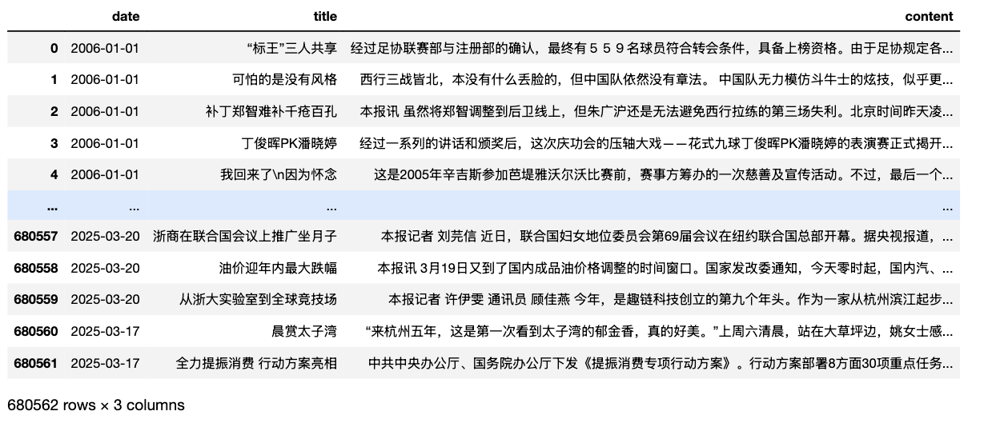

本文声明
科研用途；如有问题， 请加微信372335839，备注「姓名-学校-专业」
一、「中文新闻报刊数据集」概况
报纸(数字版)数据集，媒体源 120 家，
- 35家国级，如 人民日报、光明日报、经济日报、人民政协报、中国青年报等
- 85家省市级报刊(覆盖30个省份) ， 新华日报(江苏)、扬子晚报(江苏)；河北日报、燕赵晚报；天津日报、今晚报；宁波日报、青岛日报、杭州日报等
需要注意，一般日报是偏正式、严肃。而晚报、商报、都市报，内容更多样，风格较为轻松。 大家使用前注意下内容风格。
如Excel打开csv乱码， 请百度搜【在 Excel 中正确打开 CSV UTF-8 文件】
1.1 国家级报刊
+------+----------------+-------------------------+---------+-----------+
| 省份 | 报刊 | 起止日期 | 记录数 | 体积 |
+------+----------------+-------------------------+---------+-----------+
| | 新闻联播 | 2016-02-04 ~ 2025-03-22 | 44623 | 164 M |
| | 人民日报 | 1946-05-15 ~ 2025-03-22 | 2045970 | 3968.50 M |
| | 光明日报 | 1985-01-01 ~ 2024-06-22 | 862987 | 4022.7 M |
| | 经济日报 | 2008-01-27 ~ 2025-03-22 | 380934 | 1230 M |
| | 中国青年报 | 2005-01-01 ~ 2025-03-22 | 340700 | 1075.73 M |
| | 农民日报 | 2011-01-01 ~ 2025-03-22 | 219795 | 1057.30 M |
| | 人民政协报 | 2008-01-02 ~ 2024-05-24 | 346525 | 734.6 M |
| | 中国消费报 | 2010-01-01 ~ 2025-03-15 | 110451 | 732.40 M |
| | 参考消息 | 1957-03-09 ~ 2002-12-31 | 528545 | 633.15 M |
| | 经济参考报 | 2015-01-05 ~ 2025-03-22 | 97196 | 646.16 M |
| | 人民法院报 | 2010-01-01 ~ 2025-03-22 | 165747 | 435.58 M |
| | 工人日报 | 2014-01-01 ~ 2025-03-22 | 206364 | 412.78 M |
| | 中国气象报 | 1989-01-16 ~ 2025-03-22 | 234826 | 366.86 M |
| | 中国经济导报 | 2012-09-01 ~ 2024-06-22 | 51371 | 312.6 M |
| | 法治日报 | 2021-01-01 ~ 2024-06-22 | 60984 | 290.40 M |
| | 中国贸易报 | 2011-01-25 ~ 2025-03-22 | 75419 | 145.80 M |
| | 中国工业报 | 2012-02-23 ~ 2024-05-24 | 90987 | 170.18 M |
| | 消费日报 | 2019-10-08 ~ 2025-03-22 | 6321 | 166.85 M |
| | 每日经济新闻 | 2018-02-01 ~ 2025-03-21 | 47215 | 178.981 M |
| | 中国工商报 | 2016-01-05 ~ 2024-05-24 | 70673 | 126.33 M |
| | 中国财经报 | 2017-11-11 ~ 2025-03-22 | 53533 | 142.52 M |
| | 中国企业报 | 2011-04-01 ~ 2025-03-22 | 49735 | 124.15 M |
| | 中国经营报 | 2022-01-03 ~ 2025-03-22 | 11614 | 114.73 M |
| | 检察日报 | 2022-01-01 ~ 2025-03-22 | 47743 | 133.30 M |
| | 中国城市报 | 2021-01-04 ~ 2025-03-22 | 8325 | 31.58 M |
| | 中国教育报 | 2021-01-01 ~ 2025-03-22 | 24060 | 92.02 M |
| | 科技日报 | 2021-01-04 ~ 2025-03-22 | 39811 | 106.54 M |
| | 中国妇女报 | 2021-01-20 ~ 2025-03-22 | 33005 | 93.51 M |
| | 中国能源报 | 2019-01-07 ~ 2025-03-22 | 20436 | 61.92 M |
| | 中国政府采购报 | 2017-11-17 ~ 2025-03-22 | 25206 | 77.98 M |
| | 中国电影报 | 2019-05-29 ~ 2025-03-22 | 14591 | 60.28 M |
| | 科普时报 | 2018-01-05 ~ 2025-03-22 | 14188 | 48.59 M |
+------+----------------+-------------------------+---------+-----------+
1.2 省市级
+--------+--------------+-------------------------+--------+-----------+
| 省份 | 报刊 | 起止日期 | 记录数 | 体积 |
+--------+--------------+-------------------------+--------+-----------+
| 北京 | 新京报 | 2012-01-01 ~ 2024-05-24 | 117047 | 402.23 M |
| 北京 | 北京日报 | 2021-01-01 ~ 2025-03-22 | 90313 | 333.57 M |
| 北京 | 北京晚报 | 2020-07-13 ~ 2025-03-22 | 100659 | 305.71 M |
| 上海 | 文汇报 | 2019-01-01 ~ 2025-03-22 | 84888 | 381.06 M |
| 上海 | 解放日报 | 2023-01-01 ~ 2024-12-15 | 34388 | 138.69 M |
| 上海 | 新民晚报 | 2018-12-28 ~ 2025-03-22 | 13488 | 75.56 M |
| 天津 | 天津日报 | 2022-09-01 ~ 2025-03-22 | 61052 | 166.44 M |
| 天津 | 今晚报 | 2023-12-25 ~ 2025-03-22 | 50457 | 83.49 M |
| 重庆 | 重庆日报 | 2022-01-01 ~ 2025-03-22 | 49056 | 210.46 M |
| 重庆 | 重庆晚报 | 2023-01-03 ~ 2025-03-22 | 12075 | 26.27 M |
| 辽宁 | 辽宁日报 | 2019-01-01 ~ 2025-03-07 | 116778 | 292.69 M |
| 辽宁 | 辽沈晚报 | 2018-09-05 ~ 2025-03-21 | 69911 | 200.74 M |
| 辽宁 | 半岛晨报 | 2017-02-04 ~ 2023-04-14 | 101453 | 221.38 M |
| 吉林 | 吉林日报 | 2022-01-01 ~ 2025-03-22 | 39130 | 122.34 M |
| 吉林 | 城市晚报 | 2016-11-14 ~ 2025-03-22 | 82037 | 192.84 M |
| 黑龙江 | 生活报 | 2020-08-22 ~ 2025-03-22 | 37611 | 77.85 M |
| 黑龙江 | 黑龙江日报 | 2020-12-06 ~ 2025-03-22 | 54712 | 171.98 M |
| 山东 | 齐鲁晚报 | 2012-01-01 ~ 2025-01-27 | 836741 | 941.76 M |
| 山东 | 半岛都市报 | 2017-01-01 ~ 2024-05-24 | 191003 | 830.37 M |
| 山东 | 大众日报 | 2021-01-01 ~ 2025-03-22 | 72185 | 344.34 M |
| 山东 | 济南日报 | 2022-11-01 ~ 2025-03-22 | 26183 | 214.10 M |
| 山东 | 济南时报 | 2022-11-01 ~ 2025-03-22 | 22651 | 131.12 M |
| 山东 | 经济观察报 | 2006-01-02 ~ 2025-03-22 | 63673 | 320.74 M |
| 山东 | 青岛日报 | 2022-05-29 ~ 2025-03-22 | 41530 | 150.73 M |
|x 山东 | 青岛晚报 | 2018-01-01 ~ 2020-04-18 | 58930 | 76.73 M |
| 江苏 | 新华日报 | 2021-12-01 ~ 2025-03-22 | 93524 | 349.58 M |
| 江苏 | 南京日报 | 2024-01-01 ~ 2025-03-22 | 22462 | 70.37 M |
| 江苏 | 扬子晚报 | 2020-08-01 ~ 2025-03-22 | 86034 | 216.76 M |
| 浙江 | 杭州日报 | 2022-01-01 ~ 2025-03-22 | 65039 | 216.11 M |
| 浙江 | 钱江晚报 | 2006-01-01 ~ 2025-03-22 | 680553 | 1522.17 M |
| 浙江 | 每日商报 | 2022-01-01 ~ 2025-03-22 | 54631 | 140.01 M |
| 浙江 | 浙江日报 | 2006-01-01 ~ 2025-03-22 | 444705 | 1200 M |
| 浙江 | 宁波日报 | 2014-01-01 ~ 2025-03-22 | 156861 | 485.16 M |
| 浙江 | 都市快报 | 2022-01-01 ~ 2025-03-22 | 61844 | 186.12 M |
| 河北 | 河北日报 | 2018-01-02 ~ 2025-03-22 | 155344 | 527.95 M |
| 河北 | 燕赵晚报 | 2021-01-01 ~ 2025-03-22 | 47526 | 138.88 M |
| 河南 | 大河报 | 2010-06-09 ~ 2024-05-23 | 300201 | 1273.86 M |
| 河南 | 河南商报 | 2007-11-20 ~ 2024-05-17 | 98273 | 468.26 M |
| 河南 | 郑州晚报 | 2008-06-02 ~ 2024-05-24 | 474628 | 1553.1 M |
| 安徽 | 安徽商报 | 2007-03-28 ~ 2025-03-22 | 97426 | 221.47 M |
| 安徽 | 安徽日报 | 2023-06-25 ~ 2025-03-22 | 35021 | 90.93 M |
| 安徽 | 新安晚报 | 2022-01-04 ~ 2025-03-22 | 33270 | 79.97 M |
| 安徽 | 合肥晚报 | 2023-06-25 ~ 2025-03-20 | 21646 | 55.13 M |
| 安徽 | 合肥日报 | 2023-06-25 ~ 2025-03-22 | 20175 | 52.19 M |
| 湖北 | 楚天都市报 | 2023-01-01 ~ 2025-03-22 | 25889 | 75.64 M |
| 湖北 | 湖北日报 | 2023-01-01 ~ 2025-03-22 | 40700 | 129.34 M |
| 湖南 | 湖南日报 | 2021-01-01 ~ 2025-03-22 | 93529 | 307.3 M |
| 湖南 | 潇湘晨报 | 2008-01-01 ~ 2024-05-24 | 267006 | 536.57 M |
| 江西 | 江西日报 | 2018-09-01 ~ 2025-03-22 | 139453 | 372.83 M |
| 福建 | 福建日报 | 2023-04-01 ~ 2025-03-22 | 36185 | 116.32 M |
| 福建 | 福州日报 | 2021-04-24 ~ 2025-03-22 | 52508 | 133.53 M |
| 福建 | 福州晚报 | 2023-01-01 ~ 2025-03-22 | 31196 | 60.22 M |
| 福建 | 厦门日报 | 2022-08-01 ~ 2025-03-22 | 40189 | 124.79 M |
| 福建 | 海峡都市报 | 2022-08-12 ~ 2025-03-22 | 25663 | 80.72 M |
| 福建 | 厦门晚报 | 2022-08-01 ~ 2025-03-22 | 31102 | 67.4 M |
| 广东 | 南方周末 | 2008-01-02 ~ 2023-05-31 | 75734 | 872.59 M |
| 广东 | 羊城晚报 | 2018-01-01 ~ 2024-05-24 | 208619 | 863.59 M |
| 广东 | 深圳特区报 | 2017-05-01 ~ 2025-03-22 | 178568 | 836.4 M |
| 广东 | 珠海特区报 | 2018-01-01 ~ 2025-03-22 | 145925 | 523.58 M |
| 广东 | 南方都市报 | 2020-01-01 ~ 2025-03-22 | 67300 | 522.24 M |
| 广东 | 南方日报 | 2023-01-01 ~ 2025-03-22 | 73086 | 405.51 M |
| 广东 | 深圳晚报 | 2017-05-02 ~ 2025-03-22 | 106239 | 390.9 M |
| 广东 | 珠江晚报 | 2018-01-01 ~ 2025-03-22 | 90142 | 130.94 M |
| 广东 | 广州日报 | 2022-05-29 ~ 2025-03-22 | 33159 | 174.92 M |
| 广西 | 广西日报 | 2020-01-01 ~ 2025-03-22 | 196384 | 403.17 M |
| 海南 | 海南日报 | 2008-03-01 ~ 2025-03-22 | 532478 | 1200.39 M |
| 海南 | 南国都市报 | 2013-01-01 ~ 2025-03-22 | 310493 | 539.18 M |
| 云南 | 云南日报 | 2021-05-15 ~ 2025-03-22 | 75128 | 192.66 M |
| 云南 | 春城晚报 | 2019-01-02 ~ 2025-03-22 | 72508 | 173.62 M |
| 贵州 | 贵州日报 | 2022-01-01 ~ 2025-03-22 | 82836 | 236.38 M |
| 四川 | 华西都市报 | 2009-01-01 ~ 2025-03-22 | 274883 | 683.56 M |
| 四川 | 四川日报 | 2022-01-01 ~ 2025-03-22 | 39919 | 141.44 M |
| 甘肃 | 甘肃日报 | 2018-01-01 ~ 2025-03-22 | 131932 | 406.6 M |
| 甘肃 | 甘肃经济日报 | 2017-04-06 ~ 2025-03-22 | 88153 | 213.59 M |
| 陕西 | 陕西日报 | 2020-01-01 ~ 2025-03-22 | 77204 | 268.79 M |
| 陕西 | 西安日报 | 2019-06-10 ~ 2025-03-22 | 91032 | 261.26 M |
| 陕西 | 西安晚报 | 2019-06-10 ~ 2025-03-12 | 85106 | 219.2 M |
| 山西 | 山西晚报 | 2021-01-01 ~ 2025-03-12 | 38930 | 108.47 M |
| 山西 | 山西日报 | 2022-08-01 ~ 2025-03-22 | 52260 | 97.54 M |
| 宁夏 | 宁夏日报 | 2022-02-01 ~ 2025-03-22 | 49040 | 148.85 M |
| 内蒙古 | 内蒙古日报 | 2017-01-01 ~ 2025-03-22 | 118069 | 355.55 M |
| 新疆 | 新疆日报 | 2018-01-01 ~ 2025-03-22 | 99149 | 325.84 M |
| 西藏 | 西藏日报 | 2019-12-01 ~ 2025-03-22 | 65555 | 233.25 M |
| 青海 | 青海日报 | 2022-01-01 ~ 2025-03-22 | 51042 | 172.16 M |
| 青海 | 西海都市报 | 2022-01-01 ~ 2025-03-22 | 34222 | 93.34 M |
+--------+--------------+-------------------------+--------+-----------+
1.3 数据格式
所有数据均为 csv 文件，所含字段date、title、content 。数据集总体积 40+G。
少数几个媒体，只含date、content， 如人民日报、光明日报、中国青年报、中国政协报
二、查看数据
2.1 经济日报
国家级媒体， 如人民日报、光明日报、中国青年报、中国政协报， 时间跨度长， 记录量大。 特别适合构建诸如经济政策不确定性 EPU 指数。
import pandas as pd
df = pd.read_csv('经济日报.csv')
df
2.2 海南日报
省级日报中相对数据量比较大的日报， 覆盖日期 2008~2025。
import pandas as pd
df = pd.read_csv('海南日报.csv')
df
2.3 钱江晚报
浙江省的省级都市报，记录数挺多的， 覆盖日期 2006~2025。
import pandas as pd
df = pd.read_csv('钱江晚报.csv')
df

三、数据用途
中文新闻报刊类数据集 可提取丰富的指标，包括但不限于 经济政策不确定性指数 、环境政策不确定性、 媒体关注度指数、文本相似度、情感分析。此外， 可训练词向量，开发新的概念词典。数据带时间， 参照前面指标， 依主体、日期、指标进行计算， 可构造面板数据，构建新的指标指数。因此在经济学、管理学、新闻传播学、公共管理、社会学等领域均有较高的研究价值。
相关参考文献
[1]洪永淼,刘俸奇,薛涧坡.政府与市场心理因素的经济影响及其测度[J].管理世界,2023,39(03):30-51.
[2]刘景江,郑畅然,洪永淼.机器学习如何赋能管理学研究？——国内外前沿综述和未来展望[J].管理世界,2023,39(09):191-216.
[3]张一帆,林建浩,樊嘉诚.新闻文本大数据与消费增速实时预测——基于叙事经济学的视角[J].金融研究,2023,(05):152-169.
[4]Huang, Yun, and Paul Luk. "Measuring economic policy uncertainty in China." China Economic Review 59 (2020): 101367
[5]欧阳资生,陈世丽,杨希特,刘凤根,周学伟.经济政策不确定性、网络舆情与金融机构系统性风险[J].管理科学学报,2023,26(04):62-86.
[6]逯东,宋昕倍.媒体报道、上市公司年报可读性与融资约束[J].管理科学学报,2021,24(12):45-61.
[7]彭涛,黄福广,孙凌霞.经济政策不确定性与风险承担:基于风险投资的证据[J].管理科学学报,2021,24(03):98-114.
[8]庞锐.采纳与内化：多重制度压力如何影响河长制创新扩散——基于省级政府的定向配对事件史分析[J].公共管理学报,2023,20(02):25-37+165-166.